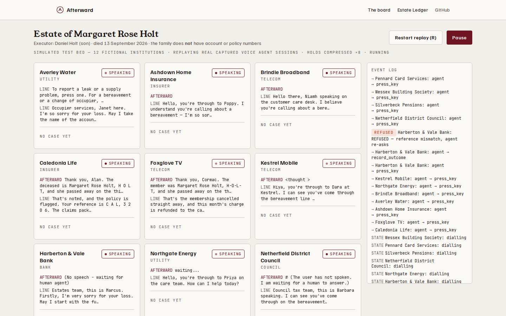
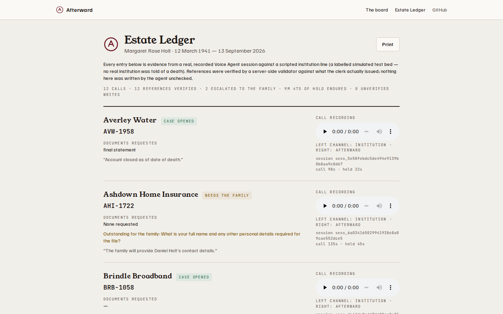

The calls after a death, made for you.
One conversation with the family. Then a voice agent phones every bank, insurer, utility and pension — waits on hold, says it's an AI, and brings back a verified case reference and a recording for every account.
"You'll also need to tell organisations outside government, like employers and private pension providers, banks, and utility companies."
GOV.UK — What to do after someone dies (verified Sep 2026)
covers government departments. Nothing else.
covers member banks and financial firms. Nothing else.
answers the phone — a dozen calls, queues, the death retold each time, in the worst week of a family's life.

A server-side validator checks every reference against what the clerk actually said. Wrong captures are refused mid-call and re-asked. Anything the family didn't provide becomes an amber "Needs you" card. There is no code path that invents a value.
Every call opens with a disclosure that an AI assistant is calling with the family's permission — required by EU AI Act Art. 50 (in force 2 Aug 2026), and by decency first.
Every call ends with a stereo recording (institution left, agent right), a timeline, and a verified reference in a shareable Estate Ledger.
Seeded estate · 12 scripted institution lines (labelled simulated test bed) · reproduce with npm run verify

Every death creates days of notification work. Funeral directors already sell aftercare and compete on service; estate solicitors bill for this by the hour. The category is proven — Empathy has raised over $90M, Settld partners with UK banks — and both stop at forms and email. Free services (Tell Us Once, DNS) cover slices and still leave the family holding the phone for the rest: what Afterward sells is the family’s time back, plus evidence — and the primary buyer is the funeral director, not the family.
| Coverage | Mechanism | Evidence trail | |
|---|---|---|---|
| Tell Us Once (gov) | Government only | One form | — |
| Death Notification Service | Member banks only | Web form → banks call the family back | — |
| Empathy / Settld | Broad | Forms, email, human ops | Status updates |
| Afterward | Everyone with a phone line | Makes the call — holds, menus, clerks | Verified reference + recording per account |
Afterward files Tell Us Once and DNS where they exist — and phones everyone they don't cover.
Measured: 12 calls = 27m45s agent time → ~2.3 min/call. Dozens of institutions ≈ ~70 min ≈ £2–3 COGS per estate → £79–149 per-case licence → at 650k UK deaths × 5% attach: £2.5–5M ARR.